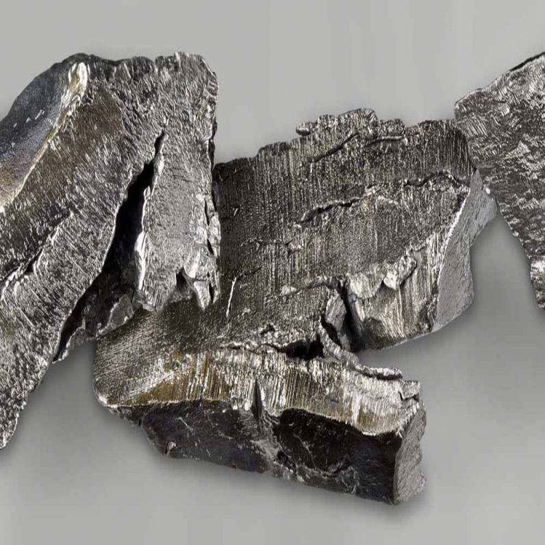

Церий
Це́рий (химический символ — Ce, от лат. Cerium) — химический элемент 3-й группы (по устаревшей классификации — побочной подгруппы третьей группы, IIIB) шестого периода периодической системы химических элементов Д. И. Менделеева с атомным номером 58.Относится к лантаноидам. Простое вещество церий — это мягкий, пластичный редкоземельный металл серебристого цвета. Легко окисляется на воздухе.

Открыт в 1803 г. Й. Берцелиусом и шведским химиком В. Хизингером, независимо от них М. Клапротом. Назван в честь открытой в 1801 г. малой планеты Церера.
Содержание церия в земной коре (3,3–6,6)·10–3 % по массе. Основные минералы: монацит, бастнезит, лопарит, самарскит. По отношению к La, Pr и другие РЗЭ во многих породах проявляет цериевую аномалию – отличие в концентрации.
В небольших количествах неон находится на Солнце, в некоторых звёздах и даже в атмосфере таких планет, как Нептун, Сатурн, Юпитер, Уран.На Земле неон мало распространён сам по себе. По чуть-чуть данный элемент содержится в земной коре и атмосфере. Неон получают из воздуха с помощью таких способов, как адсорбция и конденсация.
Церий получают экстракцией из смеси РЗЭ и применяют в зажигательных и трассирующих составах, в качестве добавок в Mg и Zr для уменьшения размера зёрен, в стали для дегазации, в стёкла для обесцвечивания, в угольные электроды для повышения светимости; СеО2 используют в полировочных составах, некоторые соединения церия – как окислители в органической и аналитической химии.